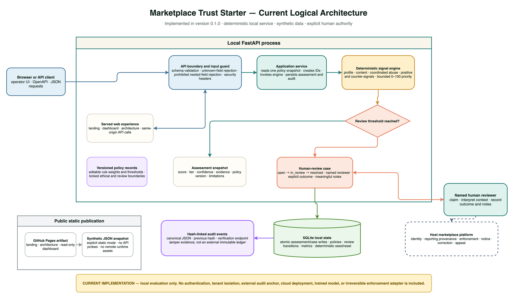
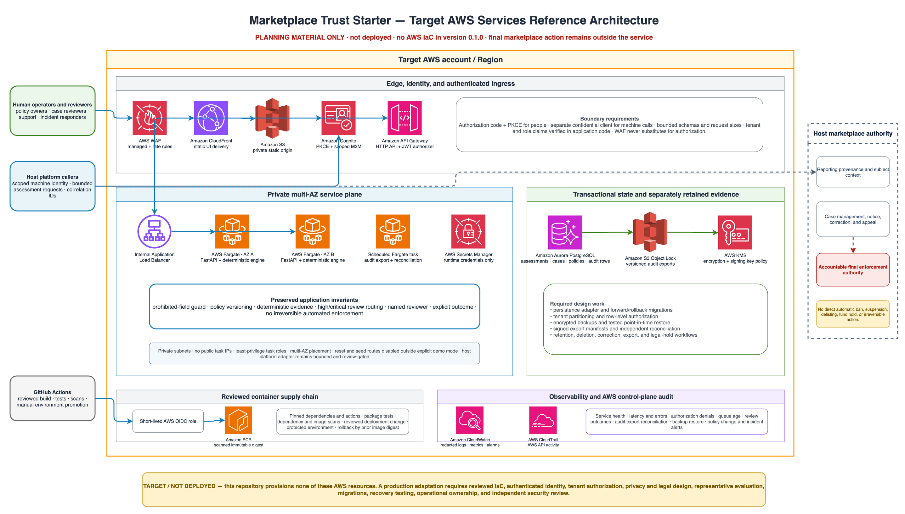

Web and API boundary
- Responsive landing, dashboard, and architecture pages
- FastAPI validation and OpenAPI documentation
- Profile, content, coordination, policy, review, audit, and reset routes
- Security headers and same-origin browser calls
Interactive system map
Choose a flow and step through validation, deterministic evidence, durable state, review routing, and audit. The browser animation mirrors the local service—there are no hidden remote models or credentials behind it.
Validated behavior enters the deterministic signal engine.
Step 1
Runtime topology
The starter is intentionally compact. Its service, engine, store, and web surfaces can be understood independently before any production integration is attempted.
Downloadable architecture
The current diagram describes version 0.1.0. The AWS diagram is planning material only: this repository contains no AWS infrastructure as code and creates no cloud resources.

Shows the actual local service, evidence and review flow, transaction state, audit boundary, and read-only public site.

Maps documented production gaps to a possible AWS shape while keeping final enforcement, notice, correction, and appeal in the host platform.
A high score creates review priority; it does not establish intent or authorize a ban.
Later policy edits do not silently rewrite the explanation attached to an existing case.
Authentication, privacy review, appeal handling, calibrated evaluation, and integrations remain deployment work.
{kind=link}
{kind=link}